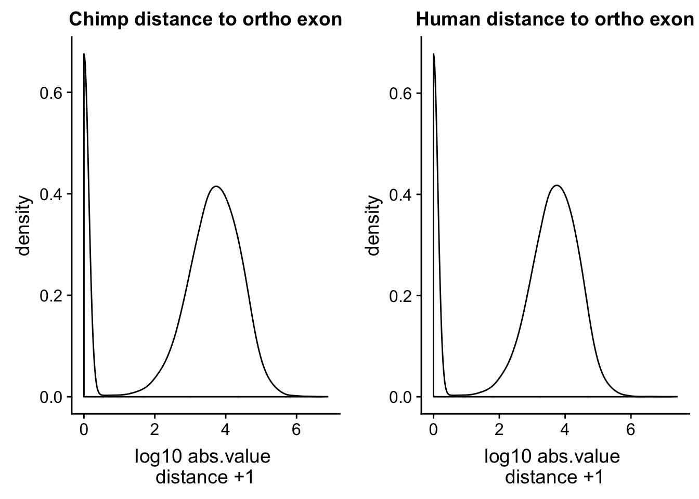

Last updated: 2018-08-21
workflowr checks: (Click a bullet for more information) ✔ R Markdown file: up-to-date
Great! Since the R Markdown file has been committed to the Git repository, you know the exact version of the code that produced these results.
✔ Environment: empty
Great job! The global environment was empty. Objects defined in the global environment can affect the analysis in your R Markdown file in unknown ways. For reproduciblity it’s best to always run the code in an empty environment.
✔ Seed:
set.seed(20180801)
The command set.seed(20180801) was run prior to running the code in the R Markdown file. Setting a seed ensures that any results that rely on randomness, e.g. subsampling or permutations, are reproducible.
✔ Session information: recorded
Great job! Recording the operating system, R version, and package versions is critical for reproducibility.
✔ Repository version: 843d7d1
wflow_publish or wflow_git_commit). workflowr only checks the R Markdown file, but you know if there are other scripts or data files that it depends on. Below is the status of the Git repository when the results were generated:
Ignored files:
Ignored: .RData
Ignored: .Rhistory
Ignored: .Rproj.user/
Untracked files:
Untracked: com_threeprime.Rproj
Untracked: data/dist_upexon/
Untracked: data/liftover/
Untracked: data/map.stats.csv
Untracked: data/map.stats.xlsx
Untracked: docs/figure/
Unstaged changes:
Modified: _workflowr.yml
Deleted: comparitive_threeprime.Rproj
I will use this analysis for QC on the orthologous peaks called in the liftover pipeline analysis.
I want to make sure the distances of the orthologous peaks to the nearest exon called in Bryans ortho exon files follow a similar distribution.
The orthologus exon files are in /project2/gilad/briana/genome_anotation_data/ortho_exon and the small version have just chr start end and exon name.
The ortho peak files are in /project2/gilad/briana/comparitive_threeprime/data/ortho_peaks/
I want the closest exon upstream, i will use bedtools closest:
distUpstreamexon.sh
#!/bin/bash
#SBATCH --job-name=disUpstreamexon
#SBATCH --account=pi-yangili1
#SBATCH --time=24:00:00
#SBATCH --output=disUpstreamexon.out
#SBATCH --error=disUpstreamexon.err
#SBATCH --partition=broadwl
#SBATCH --mem=12G
#SBATCH --mail-type=END
module load Anaconda3
source activate comp_threeprime_env
bedtools closest -id -D a -a /project2/gilad/briana/comparitive_threeprime/data/ortho_peaks/chimpOrthoPeaks.sort.bed -b /project2/gilad/briana/genome_anotation_data/ortho_exon/2017_July_ortho_chimp.small.sort.bed > /project2/gilad/briana/comparitive_threeprime/data/dist_upexon/Chimp.distUpstreamexon.txt
bedtools closest -id -D a -a /project2/gilad/briana/comparitive_threeprime/data/ortho_peaks/humanOrthoPeaks.sort.bed -b /project2/gilad/briana/genome_anotation_data/ortho_exon/2017_July_ortho_human.small.sort.bed > /project2/gilad/briana/comparitive_threeprime/data/dist_upexon/Human.distUpstreamexon.txtImport the files and plot the distances.
library(tidyverse)── Attaching packages ──────────────────────────────────────────────────────────────── tidyverse 1.2.1 ──✔ ggplot2 3.0.0 ✔ purrr 0.2.5
✔ tibble 1.4.2 ✔ dplyr 0.7.6
✔ tidyr 0.8.1 ✔ stringr 1.3.1
✔ readr 1.1.1 ✔ forcats 0.3.0── Conflicts ─────────────────────────────────────────────────────────────────── tidyverse_conflicts() ──
✖ dplyr::filter() masks stats::filter()
✖ dplyr::lag() masks stats::lag()library(workflowr)This is workflowr version 1.1.1
Run ?workflowr for help getting startedlibrary(cowplot)
Attaching package: 'cowplot'The following object is masked from 'package:ggplot2':
ggsavegetwd()[1] "/Users/bmittleman1/Documents/Gilad_lab/comparitive_threeprime/com_threeprime/analysis"file.exists("../data/dist_upexon/Chimp.distUpstreamexon.txt")[1] TRUEchimp_dist=read.table("../data/dist_upexon/Chimp.distUpstreamexon.txt", col.names = c("peak_chr", "peak_start", "peak_end", "peak_name", "exon_chr", "exon_start", "exon_end", "exon_name", "dist"), stringsAsFactors = F) %>% mutate(logdis=log10(abs(dist) +1 ))
human_dist=read.table("../data/dist_upexon/Human.distUpstreamexon.txt", col.names = c("peak_chr", "peak_start", "peak_end", "peak_name", "exon_chr", "exon_start", "exon_end", "exon_name", "dist"),stringsAsFactors = F, skip=1) %>% mutate(logdis=log10(abs(dist) +1 ))ch=ggplot(chimp_dist, aes(x=logdis)) + geom_density() + labs(x="log10 abs.value \n distance +1 ", title="Chimp distance to ortho exon")
hu=ggplot(human_dist, aes(x=logdis)) + geom_density()+ labs(x="log10 abs.value \n distance +1 ", title="Human distance to ortho exon")
plot_grid(ch, hu)
This is a good sanity check. The distributions are similar.
sessionInfo()R version 3.5.1 (2018-07-02)
Platform: x86_64-apple-darwin15.6.0 (64-bit)
Running under: macOS Sierra 10.12.6
Matrix products: default
BLAS: /Library/Frameworks/R.framework/Versions/3.5/Resources/lib/libRblas.0.dylib
LAPACK: /Library/Frameworks/R.framework/Versions/3.5/Resources/lib/libRlapack.dylib
locale:
[1] en_US.UTF-8/en_US.UTF-8/en_US.UTF-8/C/en_US.UTF-8/en_US.UTF-8
attached base packages:
[1] stats graphics grDevices utils datasets methods base
other attached packages:
[1] bindrcpp_0.2.2 cowplot_0.9.3 workflowr_1.1.1 forcats_0.3.0
[5] stringr_1.3.1 dplyr_0.7.6 purrr_0.2.5 readr_1.1.1
[9] tidyr_0.8.1 tibble_1.4.2 ggplot2_3.0.0 tidyverse_1.2.1
loaded via a namespace (and not attached):
[1] tidyselect_0.2.4 haven_1.1.2 lattice_0.20-35
[4] colorspace_1.3-2 htmltools_0.3.6 yaml_2.1.19
[7] rlang_0.2.1 R.oo_1.22.0 pillar_1.3.0
[10] glue_1.3.0 withr_2.1.2 R.utils_2.6.0
[13] modelr_0.1.2 readxl_1.1.0 bindr_0.1.1
[16] plyr_1.8.4 munsell_0.5.0 gtable_0.2.0
[19] cellranger_1.1.0 rvest_0.3.2 R.methodsS3_1.7.1
[22] evaluate_0.11 labeling_0.3 knitr_1.20
[25] broom_0.5.0 Rcpp_0.12.18 scales_0.5.0
[28] backports_1.1.2 jsonlite_1.5 hms_0.4.2
[31] digest_0.6.15 stringi_1.2.4 grid_3.5.1
[34] rprojroot_1.3-2 cli_1.0.0 tools_3.5.1
[37] magrittr_1.5 lazyeval_0.2.1 crayon_1.3.4
[40] whisker_0.3-2 pkgconfig_2.0.1 xml2_1.2.0
[43] lubridate_1.7.4 assertthat_0.2.0 rmarkdown_1.10
[46] httr_1.3.1 rstudioapi_0.7 R6_2.2.2
[49] nlme_3.1-137 git2r_0.23.0 compiler_3.5.1 This reproducible R Markdown analysis was created with workflowr 1.1.1